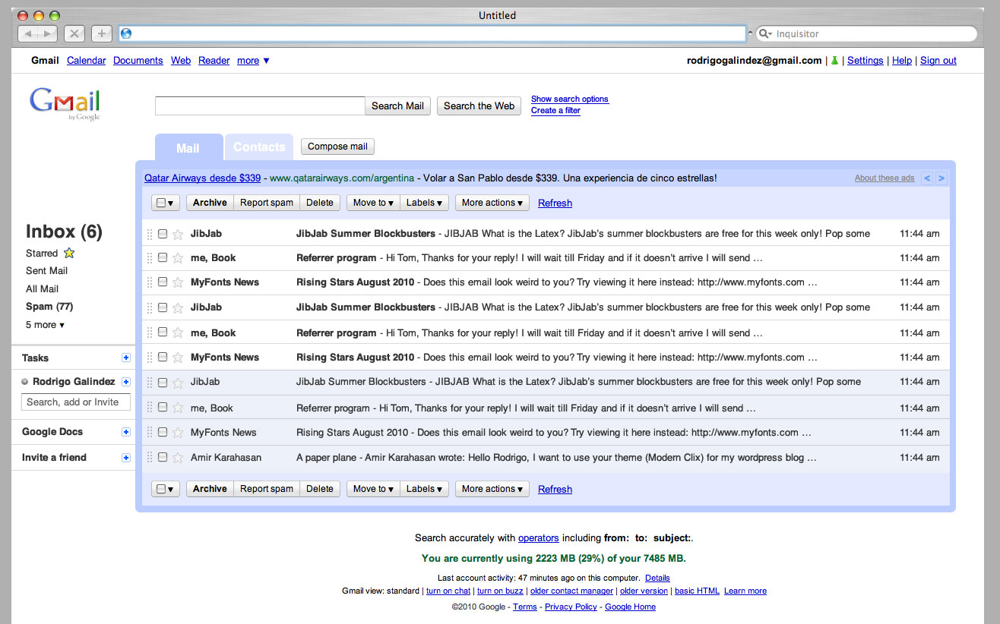
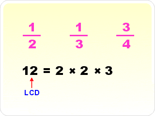
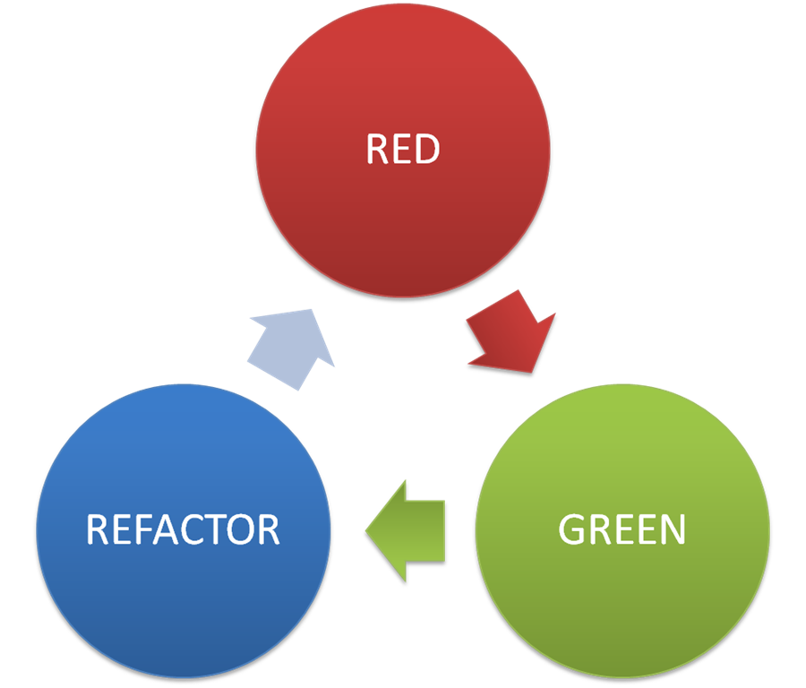

In this talk!
- What is the holy grail?
- Existing Rails solutions
- A new solution (for your consideration!)
- What else does this new solution give us?
The Holy Grail of the web
- Best possible user experience
- Best possible developer experience
The Holy Grail of the web
Best possible user experience— Single page app / "Thick" client

- No full page reloads
- Feels like a native desktop or mobile app
The Holy Grail of the web
Best possible developer experience
- Developer friendly framework– Ruby/Rails!
- DRY (don't repeat yourself) – DRV
- Write (mostly) one language
- SEO friendly
The closest thing out there today...Node.js?
Airbnb Rendr
- Write backbone js client side code
- Client incrementally updates page
- Server renders full html pages for deep links
| Rendr / Node.js | |
|---|---|
| DRY (no duplicate views) |
✓ |
| SEO Friendly | ✓ |
| "Thick" client | ✓ |
| Mostly write one language | ✓ |
| Rails? | X |
In this talk!
What is the holy grail?- Existing Rails solutions
- A new solution (for your consideration!)
- What else does this new solution give us?
Duplicate code on client and server
- Write ERB/HAML views on the server
- Server has an API for the client
- Client side keeps mustache or underscore js templates
| Rendr / Node.js | Duplicate Code | |
|---|---|---|
| DRY (no duplicate views) |
✓ | X |
| SEO Friendly | ✓ | ✓ |
| "Thick" client | ✓ | ✓ |
| Mostly write one language | ✓ | X |
| Rails? | X | ½ |
Turbolinks
- Write just server-side HAML/ERB views
- Pop in new pages without losing the browser instance
- Client is extremely simple
- That's it! Nowhere else to go
| Rendr / Node.js | Duplicate Code | Turbolinks | |
|---|---|---|---|
| DRY (no duplicate views) |
✓ | X | ✓ |
| SEO Friendly | ✓ | ✓ | ✓ |
| "Thick" client | ✓ | ✓ | X |
| Mostly write one language | ✓ | X | ✓ |
| Rails? | X | ½ | ✓ |

Ember/Angular/Backbone
- Server has an API for the client
- Entire "app" experience lives on client
- Initial page load downloads entire JS "app", builds page
- "New" twitter – 10 seconds to load a 140 character tweet!
| Rendr / Node.js | Duplicate Code | Turbolinks | Ember / Angular / Backbone | |
|---|---|---|---|---|
| DRY (no duplicate views) |
✓ | X | ✓ | ✓ |
| SEO Friendly | ✓ | ✓ | ✓ | X |
| "Thick" client | ✓ | ✓ | X | ✓ |
| Mostly write one language | ✓ | X | ✓ | X |
| Rails? | X | ½ | ✓ | ½ |
Each of these makes key tradeoffs!
In this talk!
What is the holy grail?Existing Rails solutions- A new solution (for your consideration!)
- What else does this new solution give us?
I lied...
"Perspectives"
| Perspectives | Rendr / Node.js | Duplicate Code | Turbolinks | Ember / Angular / Backbone | |
|---|---|---|---|---|---|
| DRY (no duplicate views) |
✓ | ✓ | X | ✓ | ✓ |
| SEO Friendly | ✓ | ✓ | ✓ | ✓ | X |
| "Thick" client | ✓ | ✓ | ✓ | X | ✓ |
| Mostly write one language | ✓ | ✓ | X | ✓ | X |
| Rails? | ✓ | X | ½ | ✓ | ½ |
Same template on the client/server?
<%= link_to user.name, user_url(user) %>
Lowest common denominator
= dumbest possible templates
Dumbest = {{mustache}}
Logic-less? = can't run arbitrary code!
Mustache
{{referent}}
{{{body}}}
{{#edit}}
Edit
{{/edit}}
Mustache – "tags"
{
referent: "node.js",
...
}
{{referent}}
'<blockquote>node.js</blockquote>'
Mustache – "tags"
{{{body}}}
'<a href="http://nodejs.org/">node.js</a> is a platform...'
Mustache – "tags"
{
...
edit: true,
edit_href: '/talks/1/annotations/3/edit'
}
{{#edit}}
Edit
{{/edit}}
'<a href="/talks/1/annotations/3/edit">Edit</a>'
Mustache – "tags"
{
edit: false,
...
}
{{^edit}} Can't edit! {{/edit}}
'Can't edit!'
How does this help?
{{referent}}
{{{body}}}
{{#edit}}
Edit
{{/edit}}
Generate this hash how?
Perspectives!
Perspective
class Annotations::Show < Perspectives::Base
param :annotation # param = input
property(:referent) { annotation.referent }
property(:body) { annotation.body_as_html }
# property = output
property(:edit) do
annotation.created_by == current_user || current_user.admin?
end
property(:edit_href) { edit_annotation_path(annotation) }
end
Perspective
class Annotations::Show < Perspectives::Base
param :annotation
# param = input
# ...
end
Perspective
class Annotations::Show < Perspectives::Base
property(:referent) { annotation.referent }
property(:body) { annotation.body_as_html }
# property = output
# ...
end
Perspective
class Annotations::Show < Perspectives::Base
property(:referent) { annotation.referent }
property(:body) { annotation.body_as_html }
# ...
end
HTML = unstructured data
JSON = structured data
Couple client with structured data!
Getting started!
# Gemfile
gem 'perspectives'
rails generate perspectives:install
Getting started!
Break ERB/HAML views into Perspective + Mustache template
Getting started!
Add one line to your controller
class AnnotationsController < ApplicationController
def show
annotation = Annotation.find(params[:id])
respond_with(perspective('annotations/show',
annotation: annotation))
end
end
In this talk!
What is the holy grail?Existing Rails solutionsA new solution (for your consideration!)- What else does this new solution give us?
An aside...
– these benefits were the original motivation!
#1: Separation of Concerns
ERB Version
<%= @annotation.referent %>
<%= @annotation.body_as_html %>
<% if @annotation.created_by == current_user || current_user.admin? %>
<%= link_to 'Edit', edit_annotation_path(@annotation) %>
<% end %>
Separation of concerns
...
{{#edit}}
Edit
{{/edit}}
class Annotations::Show < Perspectives::Base
# ...
property(:edit) do
annotation.created_by == current_user || current_user.admin?
end
# ...
end
#2: Testing

# spec/perspectives/annotations/show_spec.rb
require 'spec_helper'
describe Annotations::Show do
it 'should be easy to test!' do
user = double(:user)
annotation = double(:annotation, created_by: user)
annotations_show = described_class.new(
{current_user: user},
annotation: annotation)
annotations_show.edit.should be_true
end
end
#3: Caching
Caching
class Annotations::Show < Perspectives::Base
param :annotation
cache { annotation }
end
Caching
class Annotations::Show < Perspectives::Base
param :annotation
cache { annotation }
# cache_key:
# "annotations/1-20140404025902750005000"
end
Caching
class Annotations::Show < Perspectives::Base
param :annotation
cache { annotation }
delegate :created_by, to: :annotation
nested 'users/avatar', user: :created_by
end
Caching
class Users::Avatar < Perspectives::Base
param :user
cache { user }
# cache_key:
# "users/4-20140420203350976646000"
end
Caching
class Annotations::Show < Perspectives::Base
param :annotation
cache { annotation }
delegate :created_by, to: :annotation
nested 'users/avatar', user: :created_by
end
Caching
class Annotations::Show < Perspectives::Base
cache { annotation }
nested 'users/avatar', user: :created_by
# cache_key:
# "annotations/1-20140404025902750005000"
# +
# "users/4-20140420203350976646000"
# =
end
"annotations/1-20140404025902750005000/users/4-20140420203350976646000"
Drive off into the sunset?
- Nascent library / weekend project
- Still a bunch of stuff to be done!
- Answer to these Node.js libraries
- Key takeaway: share views in thick client world